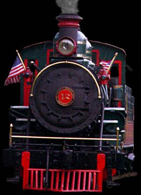
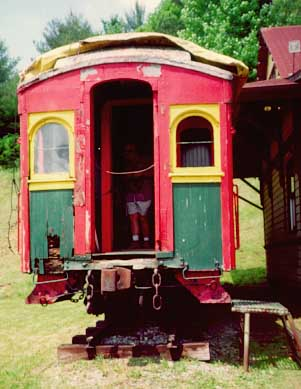
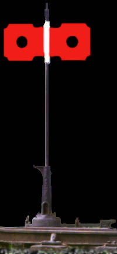
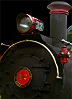

[ ETWNC Historical Society ]
[ ETWNC Email Group ]
[ ETWNC History - The Flood of 1940 ]
[ ETWNC History - During World War Two ]
[ ETWNC History - Happy 80th to #12! ]
[ Available HO scale Models ]
[ Available O scale Models ]
[ Available G scale Models ]
[ Lettering / Decals ]
[ Structure Paint Schemes ]
[ Plans / Drawings ]
[ Books ]
[ Videos ]
[ Chris Ford's Photos ]
[ Ken Riddle's excellent web site ]
[ Photos from Charlie Bryan - 1996 Heritage Day ]
[ Some of My Photos ]
[ More Photos - from 2001 ]

The East Tennessee and Western North Carolina is affectionately known as the 'Tweetsie'. Some of the original equipment still delights the locals and sounds its whistle through the hills and valleys near Boone, North Carolina. Since my wife Katy is a native of Charlotte I have adopted the ETWNC as my narrow gauge of choice in the East.
Email me if you have some to send at: rick@urbaneagle.com
Combine No. 15

John Waite
265 Madeline's Park Circle
Jefferson City, MO 65109
Email:John Waite


Subscribe to Tweetsie (ET&WNC) email listMessages are sent to tweetsie@yahoogroups.com once you are signed up.
The traffic goes in spurts, with lulls now and then, but the information is invaluable and usually in great detail and depth.



ET&WNC Railroad Historical Society, Inc.
President: Johnny Graybeal
131 Morningside Drive
Boone, NC 28607Vice President: Tim Smith
314 Meadowview Dr
Bavarian Village #109
Boone, NC 28607
Secretary: John R. Waite
265 Madeline's Park Circle
Jefferson City, MO 65109Treasurer: Ken Anderson
367 Woodhaven Trail
Boone, NC 28607Past President: Malcolm L. Marion, III, M.D.
1521 Billess Court
Rock Hill, SC 29732
18th Annual ET&WNC RR HS Convention
Banner Elk, North Carolina
June 16-18, 2006
New decal sets in all scales are in the works.
G-Scale decals by Rail Graphics
- A) Freight Car set - Accurate lettering (White). Enough to do 3 cars, 2 cabooses and 1 TOFC car. Historical and placement article enclosed. SOLD OUT
- B) Locomotive Set - Accurate lettering (White, Gold, Deluxe Gold). Enough to do 3 locos in different styles from 1910 - 1950. The three colors will cover all variations. Detail, Painting, and Lettering article plus placement drawings included. SOLD OUT
Serious Hobbies of Johnson City, TN may still have some in stock at $12.50 per set plus postage. Call Sherry at (423) 854-9900.
- C) G-Scale Tweetsie RR decals - Lettering and striping to reproduce Tweetsie Railroad No. 12 as she appears today (early 1997) using any Bachmann 4-6-0 engine. Painting, lettering, and detailing tips included. Order through Johnny Graybeal at the address above. Make checks payable to the ET&WNC RR HS. $10.00 per set.
- D) Coming - ET&WNC decals in HO and other scales.


40 ft Stockcar
Cranberry Water Tank
- December, 1968 -- 2-8-0 numbers 4-6
- July, 1981 -- An entire train (4-6-0, hopper, long gondola, boxcar, 4-wheel caboose).
Richard Webster (and me and others) adds the following plans:
Narrow Gauge & Short Line Gazette
Outdoor Railroader / Finescale Railroader
- Sep/Oct, 1984 -- Caboose
- Nov/Dec, 1984 -- Hopper
- Mar/Apr, 1985 -- Gondola
- Jan/Feb, 1998 -- Ed Gebhardt's drawings of locomotive #11
- Jan/Feb, 2000 -- Boxcars 6 thru 9
- May/Jun, 2000 -- Trailer Car #800 and Van
- Jul/Aug, 2000 -- Boxcar
- Sep/Oct, 2000 -- Excursion Car #11
- Nov/Dec, 2000 -- Gondola
- Mar/Apr, 2001 -- Linville River Coach #19
- May/Jun, 2001 -- Combine Car #15
- Jul/Aug, 2001 -- Baggage Mail Car #18
- Issue 5, 1995, pg 81 -- Excursion Car #11
- Issue 2, 1996, pg 73 -- Caboose #505-506
- Issue 4, 1996, pg 53 -- Boxcar
- Issue 5, 1996, pg 69 -- Gondola #188
- Issue 6, 1996, pg 67 -- Hopper Car
- Apr/May, 1997, pg 45 -- Boxcars 6 thru 9
- Aug/Sep, 1997, pg 71 -- Gondola #374
- Jun/Jul, 2000, pg 69 -- Hopper Car #40
Also, Mal Ferrell's book, "Tweetsie Country" has drawings for:
- Coach #16
- Boxcar #402
- Linville River Trailer Car #800
- 4-wheel Caboose #205
Coronado Scale Models
1544 E. Cypress
Phoenix, AZ 85006
- Plan -- Description -- Draftsman
- R-12 -- Boxcar (37') -- R. Schlecter
- R-13 -- Gondola -- R. Schlecter
- R-14 -- Hopper -- R. Schlecter
- ET-1 -- Boxcar #408 -- H. Darr
- ET-2 -- Gondola #275 -- H. Darr
- ET-3 -- Gondola #374 -- H. Darr
- ET-4 -- Linville River Boxcar #4 -- H. Darr
- Cranberry Enginehouse -- Fall 88
- Engine #11 -- Spring 89
- Hopper #12 -- Winter 90
- Combine #15 -- Summer 90
- Linville Depot -- Fall 90
- Boxcar #5 -- Winter 91
- Covered Deck Bridge -- Winter 92
- Covered Thru Truss -- Spring 92
- Steel Bridge -- A-M-J 93
- Engine #7 (0-8-0) -- J-F-M 94
- Engine #5 (2-8-0) -- J-F-M 98
- Engine #2 (2-6-0) -- A-M-J 98
- Stock Car #500 (early) --
- Inspection Car #1 -- J-A-S 99
- Cranberry Water Tank -- O-N-D 99
Edmund Collins III
PO. Box 58
Kutztown, PA 19530
- Plan -- Description -- Draftsman
- El -- Motor Car (1/2" scale) -- V. Ryan
- E2 -- Truck Trailer Flat Car -- V. Ryan
- E3 -- Tank Car (600 series) -- V. Ryan
- E4 -- Gondola #138 -- E. Cass
- E5 -- Boxcar #408 -- E. Cass
- E6 -- Hopper #40 -- E. Cass
- E7 -- Excursion Car #11 -- E. Cass
- E8 -- 2-6-0 #s I & 2 (Baldwin 1880) -- E. Collins III
- E9 -- 4-6-0 #12 (Baldwin 1917) -- E. Cass
- E10 -- Combine # 15 -- F Parker
- E11 -- 0-8-0 #7 (Alco 1906) -- F. Parker
- E12 -- Linville River Mail-Baggage #18 -- E. Cass
- E13 -- Linville River Vestibule Coach #19 -- E. Cass
- E14 -- Long Caboose #505 -- E. Cass
- E15 -- Boxcar #6 (37') -- E. Cass
- E16 -- Gondola #188 -- E. Cass
- E17 -- Short Caboose #205 -- E. Collins III
- E18 -- Short Flat Car #48 (c. 1895) -- E. Collins III
- E19 -- Linville River Combine #26 -- A. Lee
- ET-1 -- Boxcar #408 (32') -- H. Darr
- ET-2 -- Gondola #275 -- H. Darr
- ET-3 -- Gondola #374 (30') -- H. Darr
- ET-4 -- Linville River Boxcar #4 (37') -- H. Darr
- K-l -- Cranberry Water Tank (1/2" scale) -- J. Alexander
Any other plans that were published that you know of?
Send me the references and I will include them in this listing.


Here's Marty McGuirk's list of what has been made over the last few years for the ET&WNC in HO scale:Boxcars
Dave Hoffman
8682 U.S. Hwy. 61 North
Woodville, MS39669-3502
Gondolas
#3410 - 32' Convertible Gondola $ 16.50
#3411 - 38' Gondola $ 17.50
Trout Creek Engineering, Inc.
12874 County Road 314-B
Buena Vista, CO 81211-9708
Passenger cars
Hoppers
521 Betsy Ross Lane
Asheville, NC 28805
828-298-5923Cabooses
-->

Proposed ET&WNC 4-6-0 locomotives in HOn3


Kit #ET-48F1 is the 'plain Jane' version ... no trucks, couplers or decals ... $49.00 each.
Kit #ET-48F2 is the loaded version ... with Grandt trucks & KD 803s, no decals ... $59.00 each.
Decals will be available about the time of the kit release ... price TBD.If you're interested in more details on how the kit is constructed, parts included in the above versions, or would like to place an order, please email Jim at jking@ioa.com.
Smoky Mountain Model Works
521 Betsy Ross Lane
Asheville, NC 28805
828-298-5923


There are some photos of mine at: Annie pics


Larry Larsen Graphics
104 Conejo Place
Durango, CO 81301
(970) 259-3863
I called Larry and he received his drawing originals from Jim Hobbs. The sets are based on a specific car, but extra numbers are included. The sets used to be dry transfers but are now offered as thinfilm decals.
The sets are:
- ETL - Locomotive set, gold, including oval herald
- ETP - Passenger set, gold
- ETB - Boxcar set, white
- ETG - Gondola set, white
- ETT - Tank Car set, white
- ETC - Caboose set, white, includes lettering on arc


"Tweetsie Country", Mallory Hope Ferrell, Overmountain Press, 1991
ISBN# 0-932807-58-5
The main source of information and photos about the ET&WNC."Along the ET&WNC: Vol 1, Early Narrow Gauge Locomotives", Johnny Graybeal, Tarheel Press, 2001. Available from Tarheel Press, PO Box 3895, Hickory, NC 28603. Cost is $29.95 plus $3.50 shipping and handling (NC res add 6%). Be sure and get a copy of this one as it is only the first of a series and you'll hate yourself for not getting one when they were available.
"Narrow Gauge in Doe River Gorge", Ken Riddle, 2001. A twenty page book about 120 years of train operations in the Doe River Gorge. All proceeds go to rail restoration work. One book equals one tie. Cost is $10.00, shipping included. Make checks payable to: Doe River Gorge Christian Cmp, PO Box 791, Elizabethton, TN 37644.
"A History of Railroading in Western North Carolina", Cary Poole, Overmountain Press 1995
"Tweetsie - The Blue Ridge Stemwinder", Julian Scheer and Elizabeth Black, Charlotte N.C., Heritage House, 1958


Special Offer: Both of the above videotapes for $40.00 plus $3.50 S&H. Contact Johnny for this special offer. (Sep-01-99)
From Fred Waskiewicz:
The tapes are available through the Historical Society or A&R Productions (800-246-5898). Cost is $34.95 plus $3.50 S&H. If ordering from the Society, make checks payable to "Johnny Graybeal, ET&WNC RR HS."
Additional Information from John Waite:
From Curtis Brookshire:
From Johnny Graybeal:


Screen Savers


Comments?
 Email me
Email me


©2005 blanchard design,
all rights reserved